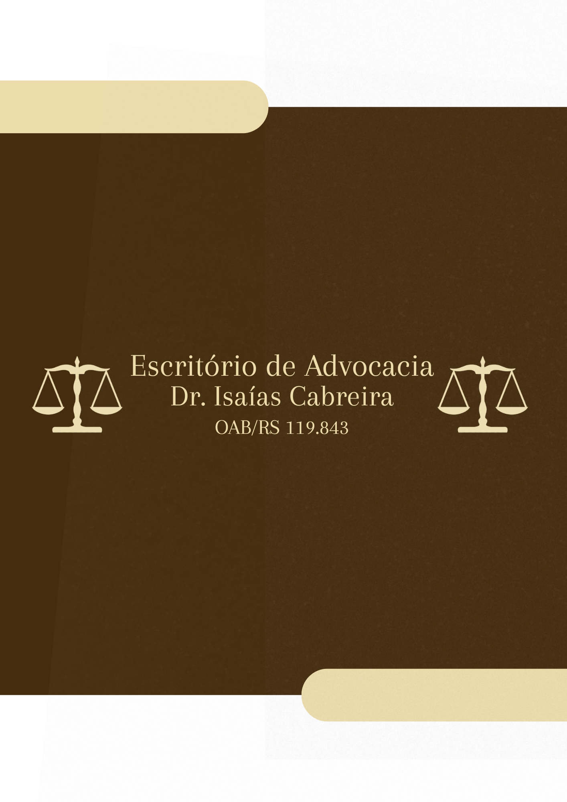
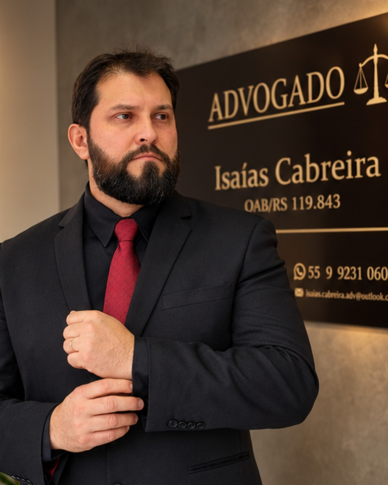

Direito Criminal
Defesa e acompanhamento em investigações e processos criminais, com atenção às garantias individuais e à análise das provas.
Consultar sobre esta área
ADVOCACIA EM SÃO GABRIEL / RS
Escuta atenta, análise jurídica cuidadosa e orientação clara para as decisões que importam na sua vida.

01 / ÁREAS DE ATUAÇÃO
Uma atuação construída a partir dos fatos, dos documentos e das particularidades de cada situação.
Defesa e acompanhamento em investigações e processos criminais, com atenção às garantias individuais e à análise das provas.
Consultar sobre esta áreaOrientação sobre contratos, obrigações, responsabilidade civil e questões patrimoniais, na prevenção e na solução de conflitos.
Consultar sobre esta áreaAnálise de relações de trabalho, direitos e deveres, verbas rescisórias e acompanhamento de demandas trabalhistas.
Consultar sobre esta áreaAtendimento em questões de divórcio, união estável, guarda, alimentos, inventários e partilhas, com cuidado e discrição.
Consultar sobre esta áreaA possibilidade de atuação e as medidas adequadas dependem da análise individual do caso.
02 / O ADVOGADO
Isaias Jessé Ribeiro Cabreira · OAB/RS 119.843
Conhecer o contexto de cada pessoa é o ponto de partida para uma atuação jurídica responsável.
O trabalho do Dr. Isaías Cabreira é pautado pelo atendimento personalizado e pelo respeito à individualidade de cada caso. A escuta do cliente se soma ao exame dos documentos e ao estudo dos caminhos jurídicos possíveis.
A pesquisa e o aperfeiçoamento das teses orientam a preparação das manifestações e o acompanhamento dos processos. A comunicação busca tornar compreensíveis as etapas, as alternativas e os limites de cada demanda.
Conheça a forma de trabalho03 / FORMA DE TRABALHO
Clareza para compreender a situação e cuidado para conduzir cada encaminhamento.
Atendimento pessoal para conhecer o contexto, as dúvidas e os objetivos do cliente.
Organização das informações, exame dos documentos e pesquisa dos fundamentos jurídicos pertinentes.
Apresentação das possibilidades, dos riscos e das etapas, para decisões conscientes.
Preparação das medidas cabíveis e acompanhamento processual dentro do escopo contratado.
04 / EQUIPE E ACOLHIMENTO
ASSISTENTE JURÍDICO
Pedro integra a rotina do escritório no atendimento aos clientes, no acolhimento inicial das demandas e na organização funcional e administrativa.
Seu trabalho envolve o apoio na organização de documentos, no agendamento e na comunicação com o escritório, contribuindo para um atendimento pessoal e organizado, sob a supervisão do advogado responsável.
ANTES DO PRIMEIRO CONTATO
Algumas orientações para organizar sua conversa com o escritório.
Entre em contato para informar o assunto e verificar a disponibilidade de agendamento. O escritório orientará sobre os documentos e as condições do atendimento.
Tenha em mãos os documentos relacionados ao assunto, como contratos, notificações e comunicações recebidas. Se já houver processo, separe o número e as decisões disponíveis. A documentação necessária será indicada conforme o caso.
Sim. Informe o assunto e que já existe um processo. O advogado avaliará os documentos, a situação da representação e a possibilidade de atuação, observados os deveres profissionais.
Não. Ele organiza o contato inicial. A orientação jurídica exige análise individual, e o envio de mensagem não formaliza a contratação nem assegura resultados.
05 / CONTATO
Escolha o assunto e prepare sua mensagem.
O atendimento começa com uma conversa.